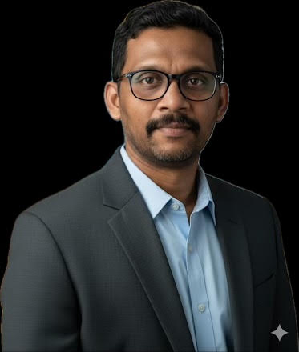

Legacy SAS → PySpark Modernization Engine
Designed a reusable framework to translate legacy SAS workloads into PySpark pipelines, helping teams move toward modern cloud-native data platforms.
SAS · Python · PySpark · AWS Glue · Spark

AI & Cloud Modernization · Enterprise Data Platforms
I design modern data platforms that turn legacy systems into scalable, cloud-native, and AI-enabled architectures.
18+ years of software and data engineering · AWS · Snowflake · Spark · Python · AI engineering automation
I’ve always been drawn to systems that are messy, fragile, or misunderstood. The more complex the environment, the more interesting the challenge. Over time, that curiosity turned into a career focused on transforming scattered data, legacy code, and manual processes into clean, automated, intelligent platforms.
My engineering interests extend beyond data pipelines. I enjoy building modern apps, microservices, and lightweight automation tools that solve real problems for teams. Whether it’s a service that monitors pipelines, an API that compares databases, or an internal app that converts legacy code into modern engines, I like creating software that feels purposeful and practical.
One of my most impactful contributions has been designing an automated framework that converts legacy SAS scripts into PySpark pipelines. It eliminates manual rewrites, reduces migration time, and gives engineers a predictable path from old systems to modern cloud-native architectures.
Today, my work lives at the intersection of cloud engineering, AI-driven automation, microservice design, and modern analytics. I’m especially focused on agentic AI — building systems that can watch, reason, and assist engineers and business users instead of just waiting to be queried.
My journey has been shaped by a desire to build things that make life easier for engineers, analysts, and business teams. I’ve moved from BI and reporting into deep data engineering, architecture, AI automation, and microservice development. Along the way, I’ve built tools that compare entire databases, frameworks that translate old code into modern engines, and apps that bring intelligence directly into analytics workflows.
At Experian, modernization meant dealing with years of accumulated logic in legacy ETL and SAS code. I led efforts to rebuild DataStage pipelines into AWS Glue and Snowflake, and designed a conversion framework that translated SAS scripts into PySpark. This framework became a reusable migration engine that accelerated modernization across teams.
I also built microservices that automated SQL validation, metadata extraction, and documentation. One of the most impactful was a database comparison service that analyzed schema differences, lineage gaps, and data quality issues between legacy systems and Snowflake. It turned weeks of manual analysis into a guided, automated workflow.
At Germania, I focused on making analytics feel less like reporting and more like insight. I integrated AI into dashboards to generate narrative commentary, flag anomalies, and surface risks. I also built internal apps and microservices that supported ingestion, quality checks, and automated KPI monitoring.
My earlier work across ThermoFisher, GM, Deloitte, and Accenture gave me the architectural discipline I still rely on: dimensional modeling, warehouse design, BI modernization, and large-scale system migrations. Those environments taught me how to build systems that don’t just work once, but keep working as the business grows and changes.
Selected examples of enterprise modernization, data engineering automation, cloud architecture, and AI-assisted engineering.
Designed a reusable framework to translate legacy SAS workloads into PySpark pipelines, helping teams move toward modern cloud-native data platforms.
Built an automated database comparison approach for SQL execution, reconciliation, schema validation, and migration quality analysis.
Exploring practical AI systems that monitor pipelines, interpret metadata, assist SQL optimization, generate documentation, and support engineering decisions.
Modernized legacy ETL and analytics workloads using AWS-native services, Snowflake, Spark, and automated delivery practices.
I believe great data systems are quiet. They don’t draw attention to themselves. They run predictably, scale gracefully, and make life easier for the people who depend on them. My job is to build those systems — the ones that disappear into the background because they simply work.
I also believe AI belongs inside engineering, not outside it. Not as a replacement for human judgment, but as a tool that amplifies it. AI can validate pipelines, generate documentation, detect anomalies, and accelerate development — but only when guided by engineers who understand the craft.
At the end of the day, I’m not trying to build the flashiest systems. I’m trying to build the ones that last.
I’m currently writing research papers on Modern Agentic AI and how autonomous systems can reshape industries like insurance, fintech, manufacturing, and enterprise operations. My work explores how agents can plan, act, evaluate, and collaborate with human engineers.
Each research project will document the problem, architecture, methodology, experiments, measurable results, and practical enterprise applications. Publication links, papers, and supporting code will be added as they become available.
My goal is to build frameworks where AI becomes a reliable engineering partner — not a novelty, but a practical tool that improves quality, speed, and clarity across enterprise data systems.
Let’s connect professionally.